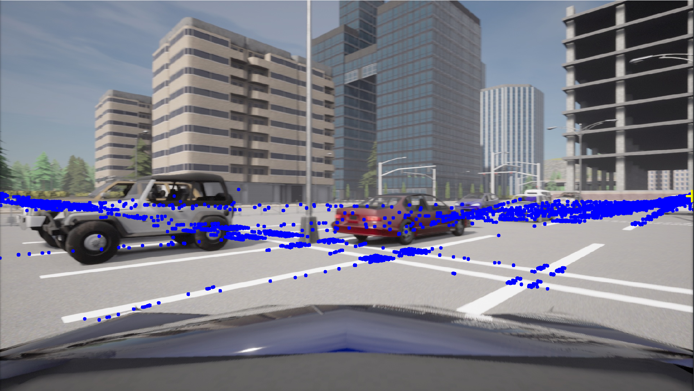
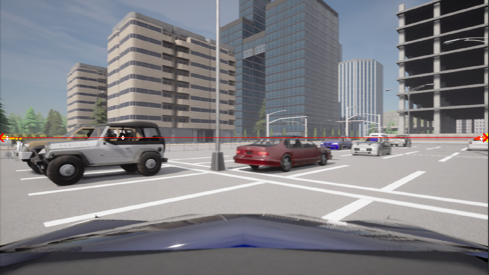
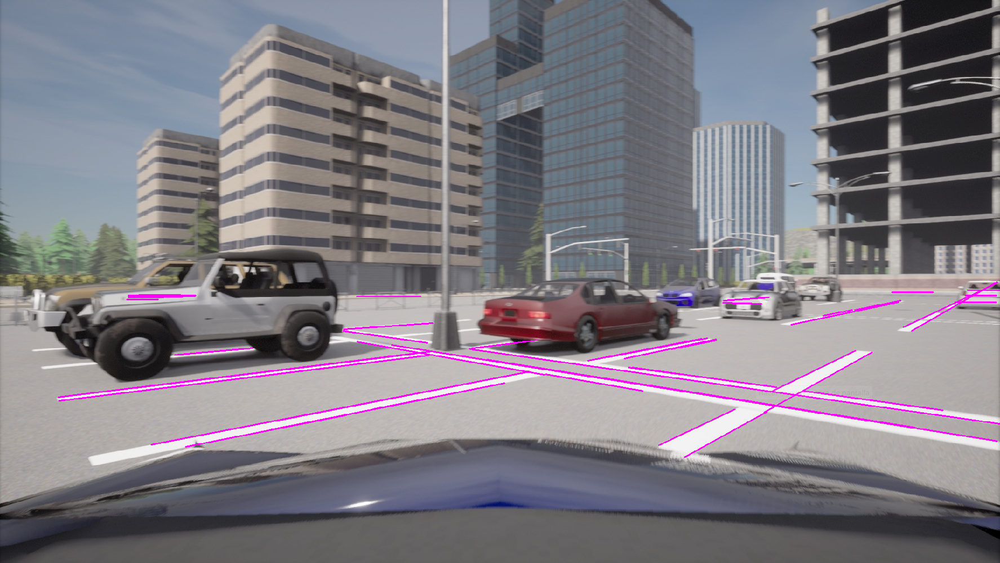
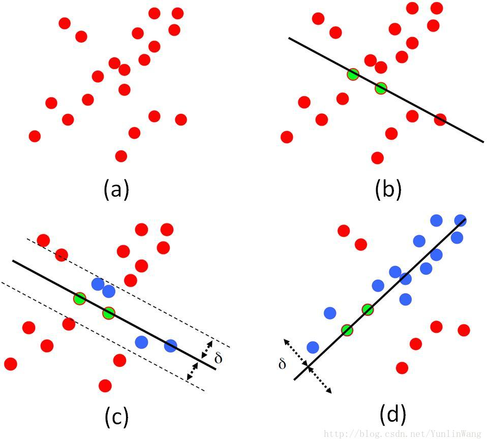
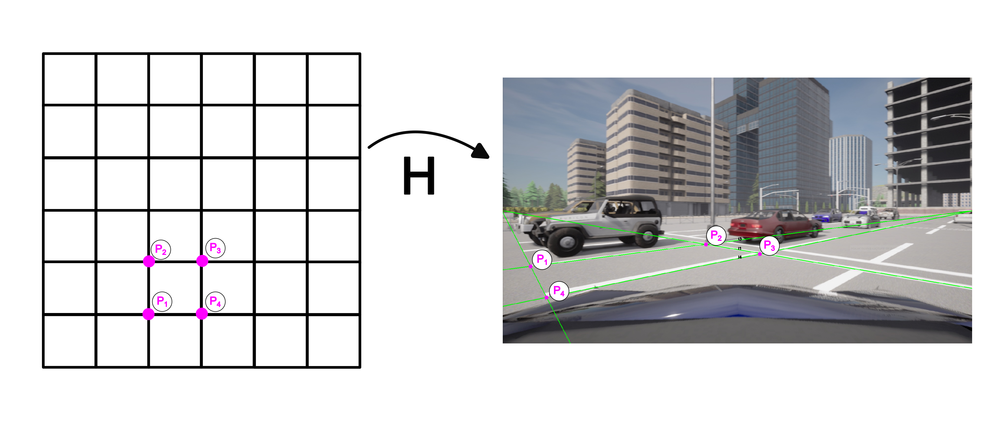
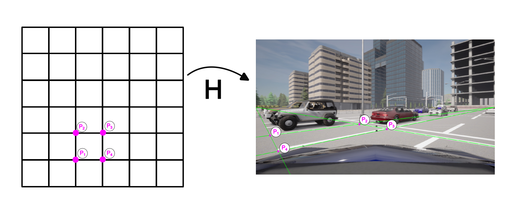
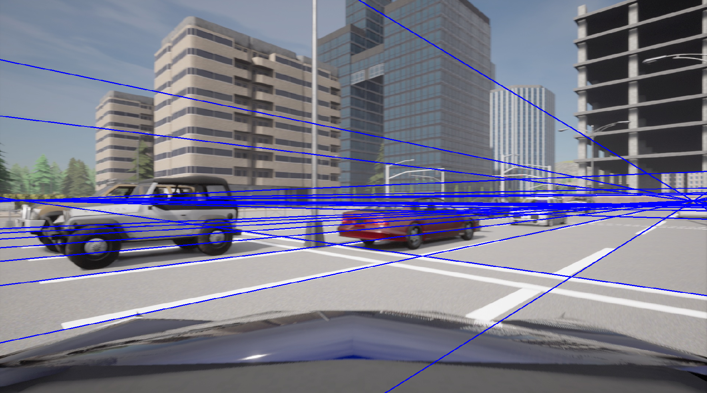
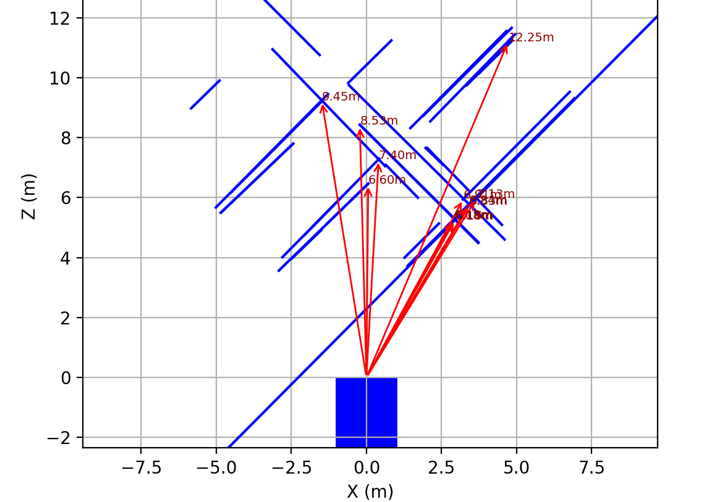
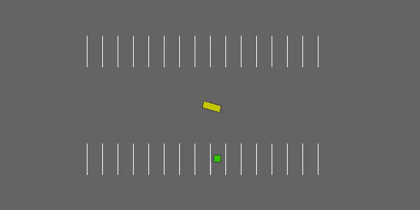

Estimación de la pose de un vehículo respecto a su estacionamiento en simulación
Proyecto de tesis
Jun, 2025
Introducción
Estacionamiento
- Importancia
- Problemas
- Soluciones

Sistemas de asistencia al conductor


Aprendizaje por Refuerzo

- Agente

- Acciones

- Entorno

- Interprete

- Estado

- Recompensa


Visión Computacional


Marco Teórico
Hipótesis
“Estimando la posición relativa al estacionamiento de un vehículo mediante cámaras y sensores, y utilizando esta posición, se puede lograr un sistema de estacionamiento automático en simulación.”
Objetivo general
Desarrollar un sistema de estimación de la posición relativa al estacionamiento de un vehículo mediante cámaras y sensores para estacionamiento automático
Preguntas de investigación
- ¿Cómo se puede representar la posición de un vehículo con respecto a su espacio de estacionamiento?
- ¿Cómo se puede estimar esta posición utilizando las cámaras y sensores del vehículo?
- ¿Cómo usar esta posición estimada para que el vehículo se estacione automáticamente?
Metodología
Entorno de simulación
Carla
Código abierto (Dosovitskiy et al. 2017)
Entornos urbanos
Ciudades, carreteras, estacionamientos
Vehículos, peatones, semáforos, sensores
Api Python


Diseño del entorno de simulación


Detección del estacionamiento
Propiedades
- Los estacionamientos suelen formar estructuras regulares, organizada como una retícula de paralelogramos.
- Las líneas de los paralelogramos al proyectarse en la cámara pueden intersectarse en los “puntos de fuga”.
Proyección de la imagen en el plano de la cámara


Geometría del estacionamiento

Geometría del estacionamiento

Geometría del estacionamiento
Detección de líneas paralelas
- Umbralización
- Detección de contornos (Algoritmo de Canny)
- Lineas paralelas (Transformada de Hough)
Ecuaciones de las rectas de las líneas
\(a x + b y + c = 0\) \[ \begin{aligned} \left[\begin{array}{ccc} x_1 & y_1 & 1 \\ x_2 & y_2 & 1 \end{array}\right] \begin{bmatrix} a \\ b \\ c \end{bmatrix} = \begin{bmatrix} 0 \\ 0 \end{bmatrix} \end{aligned} \]
- Calculamos el espacio nulo (a,b,c) de cada recta
- SVD (Descomposición en valores singulares)
Ubicación de puntos de fuga

- Intersección de las rectas
- \(P= l_1 \times l_2\)
- Detección de cúmulos de puntos
Intersección de n líneas
La intersección de n líneas homogéneas esta dado por el eigen vector asociado al eigen valor más pequeño de la matriz \(M\) donde: \[ M = \sum_{i=1}^{n} w_i l_i l_i^T \] donde \(w_i\) es una ponderación asociado a la linea \(l_i\) .
Geometric Computation for Machine Vision (Kanatani 1993)
Lineas que concurren en los puntos de fuga


Experimentación y ajuste de parámetros
Ajuste de la retícula (RANSAC)

- RANdom SAmple Consensus
- Es un algoritmo iterativo utilizado para ajustar modelos a datos con muchos valores atípicos (outliers)
Ajuste de la retícula (RANSAC)
 

Ajuste de la retícula (RANSAC)

mediciones en la retícula

\[ \mathbf{p}_1 = [x_1, y_1, 1]^T , \mathbf{p}_2 = [x_2, y_2, 1]^T \]
\[ \mathbf{P}_1 = \mathbf{H} \cdot \mathbf{p}_1,\quad \mathbf{P}_2 = \mathbf{H} \cdot \mathbf{p}_2 \]
\[ d = \sqrt{(X_2 - X_1)^2 + (Y_2 - Y_1)^2} \]
Posición relativa
Aplicación en ambiente de RL
Highway-env
- Colección de entornos para tareas de conducción autónoma y toma de decisiones tácticas (Leurent 2018) 


Parking-env
- Acciones: espacio continuo
Box([-1, -1], [1, 1]) → [aceleración, dirección] - Observación: vector continuo de 6 elementos:
[x, y, vx, vy, cos(θ), sin(θ)]
- Objetivo: alcanzar una posición objetivo (
Landmark) con orientación deseada. - Recompensa: basada en la distancia al objetivo y penalizaciones por colisiones y acciones: \[ r = -|g - s| - α·|a| \]
Parking-env (Nuestra versión)
- Initialization Wrapper
- Observation Wrapper
- Action Wrapper
Entrenamiento del agente
| Initial | |
|---|---|
| ep_len_mean | 87.5 |
| ep_rew_mean | -51.8 |
| success_rate | 0 |
| time | |
| episodes | 4 |
| fps | 52 |
| time_elapsed | 6 |
| total_timesteps | 350 |
| train | |
| actor_loss | -2.41 |
| critic_loss | 0.0353 |
| ent_coef | 0.78 |
| ent_coef_loss | -0.832 |
| learning_rate | 0.001 |
| n_updates | 249 |
| Highway-env | |
|---|---|
| ep_len_mean | 20.1 |
| ep_rew_mean | -6.92 |
| success_rate | 0.93 |
| time | |
| episodes | 3292 |
| fps | 36 |
| time_elapsed | 2758 |
| total_timesteps | 99957 |
| train | |
| actor_loss | 1.44 |
| critic_loss | 0.00482 |
| ent_coef | 0.00608 |
| ent_coef_loss | 0.622 |
| learning_rate | 0.001 |
| n_updates | 99856 |
| Our Wrapper | |
|---|---|
| ep_len_mean | 92 |
| ep_rew_mean | -35.2 |
| success_rate | 0.18 |
| time | |
| episodes | 101 |
| fps | 12 |
| time_elapsed | 1520 |
| total_timesteps | 9210 |
| train | |
| actor_loss | -0.76 |
| critic_loss | 0.041 |
| ent_coef | 0.62 |
| ent_coef_loss | -0.34 |
| learning_rate | 0.001 |
| n_updates | 8215 |
Avances y Planificación
| Actividad | Ene | Feb | Mar | Abr | May | Jun | Jul | Ago | Sep | Oct | Nov | Dic | Ene | Feb | Mar | Abr | May | Jun |
|---|---|---|---|---|---|---|---|---|---|---|---|---|---|---|---|---|---|---|
| Investigación y revisión bibliográfica | ✅ | ✅ | ✅ | ✅ | ✅ | ✅ | ✅ | ✅ | ✅ | ✅ | ✅ | |||||||
| Diseño y Configuración del Entorno Simulado | ✅ | ✅ | ✅ | ✅ | ✅ | |||||||||||||
| Adquisición y pre-procesamiento de Datos | ✅ | ✅ | ✅ | ✅ | ||||||||||||||
| Interpretar los datos de los sensores | ✅ | ✅ | ✅ | |||||||||||||||
| Obtención de mediciones en la imagen | ✅ | ✅ | ||||||||||||||||
| Detección de lineas y puntos de fuga | ✅ | ✅ | ✅ | |||||||||||||||
| Estimación de la posición de la retícula | ✅ | ✅ | ✅ | |||||||||||||||
| Estimación de distancias | ✅ | ✅ | ||||||||||||||||
| Estimación de la posición relativa | ✅ | ✅ | ||||||||||||||||
| Establecer los límites de la retícula | ⏳ | |||||||||||||||||
| Utilizar la posición en algoritmos de RL | ✅ | ✅ | ⏳ | |||||||||||||||
| Documentación y Análisis de Resultados | ✅ | ✅ | ✅ | ✅ | ✅ | ✅ | ✅ | ✅ | ✅ | ✅ | ✅ | ✅ | ✅ | ✅ | ✅ | ✅ | ✅ | ⏳ |
| Redacción y Revisión del documento de tesis | ✅ | ✅ | ✅ | ✅ | ✅ | ✅ | ⏳ |
Fin
Gracias por su atención…
Extras
Recomendaciones
- Utilizar patrones de retículas mas complejas
- Fusionar información de la retícula de cada frame para construir un mapa con memoria de frames pasados
- Detectar estacionamientos ocupados para exluirlos de la retícula
Gymnasium
- Provee un API para crear y compartir entornos de aprendizaje por refuerzo (Towers et al. 2024).
- Permite evaluar agentes en diversos entornos estandarizados.
- El núcleo de Gym es Env, una clase de Python de alto nivel representando los procesos de decisión de Markov (MDP)
- La clase proporciona a los usuarios la capacidad de generar un estado inicial, realizar la transición a nuevos estados dada una acción y observar el entorno.
Stable-baselines 3
- Implementaciones confiables de algoritmos de aprendizaje por refuerzo en PyTorch. (Raffin et al. 2021)
- API de Gymnasium para interactuar con los entornos.
- Interfaz sencilla para entrenar y evaluar agentes de RL.
- Admite algoritmos populares como
- DQN (DeepQ-Network)
- PPO (Proximal Policy Optimization)
- SAC (Soft Actor-Critic)
- A2C (Advantage Actor-Critic)
Propiedades de la representación homogénea de lineas y puntos
si \(l_1\) y \(l_2\) son la representación homogénea de dos lineas en el plano el punto donde se intersectan esta dado por: \[ P = l_1 \times l_2 \]
si \(p_1\) y \(p_2\) son la representación homogénea de dos puntos en el plano la linea que pasa por estos puntos esta dado por: \[ l = p_1 \times p_2 \]
Hartley, R., & Zisserman, A. (2003). Multiple view geometry in computer vision. Cambridge university press.
Objetivos específicos:
- Modelar un ambiente de simulación de un vehículo y estacionamiento.
- Obtener datos de los sensores del vehículo en simulación.
- Interpretar los datos de los sensores mediante técnicas de visión computacional.
- Procesar los datos y estimar la posición del vehículo con respecto al estacionamiento.
- Utilizar la posición estimada para lograr un sistema de parqueo automático en simulación.
Trabajos relacionados
| Características / Trabajos relacionados | Propia | Autonomous Driving Architectures (Bachute and Subhedar 2021) | Vision-based Autonomous Car Racing (Cai et al. 2021) | Model-based Probabilistic Collision Detection (Althoff, Stursberg, and Buss 2009) | Cost-effective Vehicle Detection System (Alam, Jaffery, and Sharma 2022) |
|---|---|---|---|---|---|
| Utilización de cámaras RGB y sensores | X | X | X | X | X |
| Algoritmos de Aprendizaje Automático | X | X | X | X | X |
| Modelar la pose del vehiculo en el estacionamiento | X | ||||
| Maniobras de estacionamiento | X | ||||
| Análisis de tareas en la conducción autónoma | X | X | |||
| Detección de vehículos en conducción autónoma | X | X | |||
| Predicción estocástica de ocupación de la carretera | X | ||||
| Aprendizaje por refuerzo imitativo | X |
Referencias

Facultad de Matemáticas
Universidad Autónoma de Yucatán